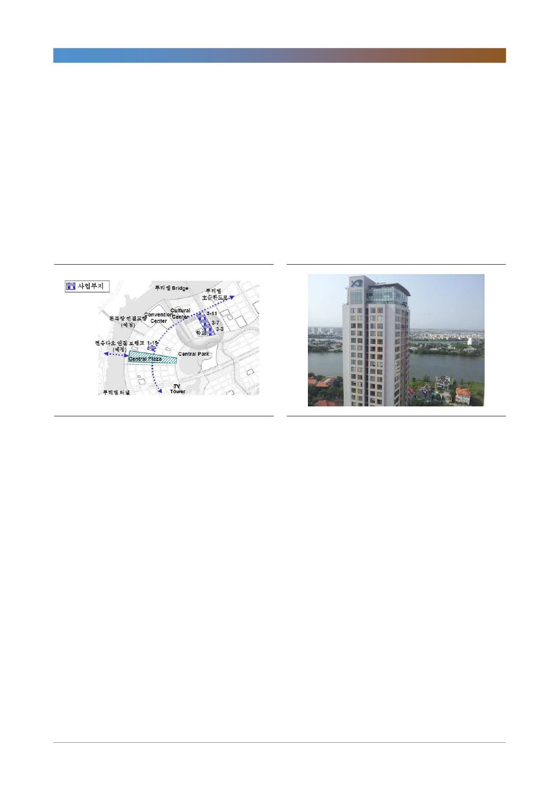

GS건설(006360)
1. 투티엠
투티엠 신도시(200만평)는 푸미흥에서 15분 거리의 신도시다. 베트남 정부는 투
티엠에 2.7만세대, 총 14.5만명을 수용하기 위해 4개 다리와 지하철 2호선 등 인
프라를 조성하고 있다. 푸미흥은 호치민 시내 중심에서 15분거리에 위치하며 외
국기업에 의해 최초로 개발된 110만평 규모의 신도시였다. 투티엠은 푸미흥에 이
어 향후 호치민의 새로운 부도심 역할을 할 신도시로 입지가 매우 양호하다. GS
건설은 이 중 1.2만평의 부지를 확보하고 있으며 3개 블록(3-11, 3-7, 3-3)으
로 나눠 1년 간격으로 순차적으로 착공할 예정이다. 이 중 첫번째인 3-11 블록
이 연말 착공된다.
[그림 4] 투티엠 프로젝트 부지
[그림 5] 2008년 분양한 Xi Riverview- 2군 사이공 강변
자료: GS건설, 한국투자증권
자료: GS건설, 한국투자증권
2. 냐베
냐베 신도시 사업은 105만평에 1.7만가구의 주택을 공급하는 사업이며 일반 외
국인 투자 프로젝트다. 2004년 말 GS건설은 호치민 인민위원회와 MOU를 체결
하고 호치민 중심부에서 10km 거리에 위치한 냐베 부지의 50년 부지 사용권을
확보했다(1년 연장 가능).
냐베 신도시의 위치는 최대 신도시인 푸미흥에서 35분 거리이며 자족기능을 갖
춘 계획 신도시를 목표로 한다는 점에서 한국의 분당과 유사하다. 2008년 계획
초안은 용적률 230%였으나 최근 370%로 높여, 허용 층수도 18층에서 25층으
로 늘어났다. 이에 따라 공급 세대수도 203세대 이상 늘어난 것으로 파악된다.
올 4분기 1-1단계를 시작으로 2~3년 간격으로 5단계까지 순차적으로 착공,
2032년 완공할 계획이다. 1-1단계 분양은 359세대 빌라부터 시작하며, 1-2단
계는 662세대, 1-3단계는 2,446세대로 각각 2020년, 2021년에 착공한다.
6